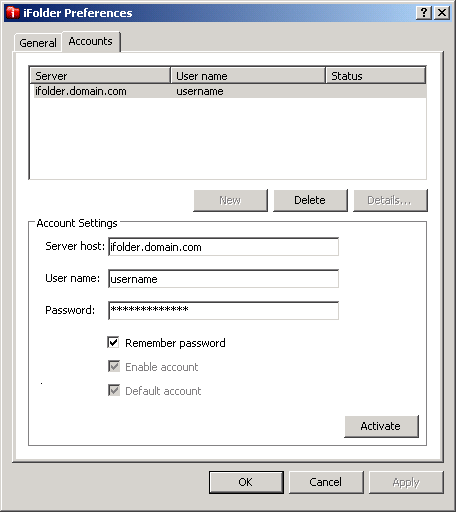

Configuring an iFolder Account
You must configure at least one iFolder account before you can create iFolders or set up shared iFolders on your system.
-
Right-click the iFolder application icon
 in the Notification area, then select Accounts to open the iFolder Preferences dialog box to the Accounts tab.
in the Notification area, then select Accounts to open the iFolder Preferences dialog box to the Accounts tab.
 -
Select New to access the Account Settings area.
-
Specify the following values:
Parameter Description Host Name
The DNS name of the enterprise server. For example: svr21.mydomain.com.
User Name
Your network username in the domain served by the iFolder server. For example: jdoe or acatt.
Password
The password for your username.
Remember Password
Select Remember Password to log in automatically to this iFolder account whenever you log in to your computer. For this release, you should enable this option. For information, see Logging In to the iFolder Client.
If your network password changes, automatic authentication fails, then iFolder prompts you to log in with your new password and allows you to specify and save the new password.
Enable Account
Select Enable Account to allow background synchronization of iFolder invitations, the user roster, and iFolders for this account.
Default Account
Select Default Account to make this account the one selected by default in drop-down list of accounts when you create iFolders.
-
Click Activate.
The account appears in the list of accounts.
-
Click OK to close the iFolder Preferences dialog box.
If you selected Remember Password, iFolder logs in to the account and begins synchronizing any existing iFolders, iFolder invitations, and the user roster for that account.
-
After the synchronization is complete, right-click the iFolder application icon, then select My iFolders to set up iFolders for the account.
For information, see Setting Up an Available iFolder.